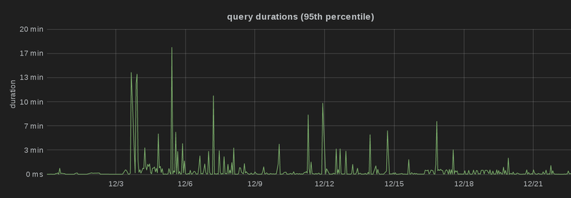
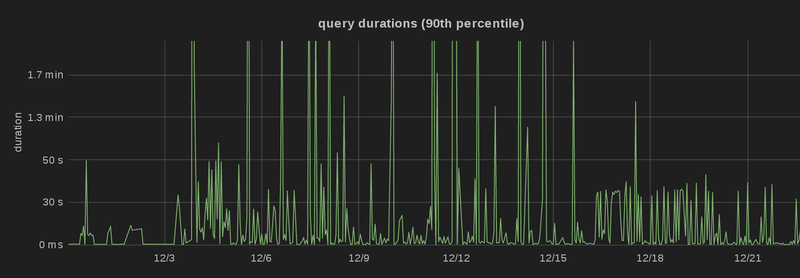
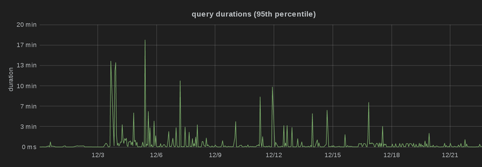
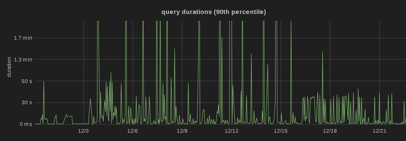

Table of contents
It’s been a couple of weeks since I’ve launched Debian Code Search Instant, so people have had the chance to use it for a while and that gives me plenty of data points to look at :-). For every query, I log the search term itself as well as the duration the query took to execute. That way, I can easily identify queries that take a long time and see why that is.
There is a class of queries for which Debian Code Search (DCS) doesn’t perform so well, and that’s queries that consist of trigrams which are extremely common. Whenever DCS receives such a query, it needs to search through a lot of files. Note that it doesn’t really matter if there are plenty of results or not — it’s the number of files that potentially contain a result which matters.
One such query is “arse” (we get a lot of curse words). It consists of only two
trigrams (“ars” and “rse”), which are extremely common in program source code.
As a couple of examples, the terms “parse”, “sparse”, “charset” and “coarse”
are all matched by that. As an aside, if you really want to search for just
“arse”, use word boundaries, i.e. “\barse\b”, which also makes the query
significantly faster.
Fixing the overloaded frontend
When DCS first received the query, “arse” would lead to our frontend server crashing. That was due to (intentionally) unoptimized code — we were aggregating all search results from all 6 source backends in memory, sorted them, and then wrote them out to disk.
I addressed this in commit d2922fe92 with the following measures:
- Instead of keeping the entire result in memory, just write the result to a temporary file on disk (“unsorted.json”) and store pointers into that file in memory, i.e. (offset, length) tuples. In order to sort the results, we also need to store the ranking and the path (to resolve ties and thereby guarantee a stable result order over multiple search queries). For grouping the results by source package, we need to keep the package name.
- If you think about it, you don’t need the entire path in order to break a tie — the hash is enough, as it defines an ordering. That ordering may be different, but any ordering is good enough for the purpose of merely breaking a tie in a deterministic way. I’m using Go’s hash/fnv, the only non-cryptographic (fast!) hash function that is included in Go’s standard library.
- Since this was still leading to Out Of Memory errors, I decided to not store a copy of the package name in each search result, but rather use a pointer into a string pool containing all package names. The number of source package names is relatively small, in the order of 20,000, whereas the number of search results can be in the millions. Using the stringpool is a clear win — the overhead in the case where #results < #srcpackages is negligible, but as soon as #results > #srcpackages, you save memory.
With all of that fixed, the query became at all possible, albeit with a runtime of around 20 minutes.
Double Writing
When running such a long-running query, I noticed that the query ran smooth for a while, but then it took multiple seconds without any visible progress at the end of the query before the results appeared. This was due to the frontend ranking the results and then converting “unsorted.json” into actual result pages. Since we provide results ordered by ranking, but also results grouped by source packages, it was writing every result twice to disk. What’s even worse is that due to re-ordering, every read was essentially random (as opposed to sequential reads).
What’s even worse is that nobody will ever click through all the hundreds of thousands of result pages, so they are prepared entirely in vain. Therefore, with commit c744b236e I made the frontend generate these result pages on demand. This cut down the time for the ranking phase at the end of each query from 20-30 seconds (for big queries) to typically less than one second.
Profiling/Monitoring
After adding monitoring to each of the source-backends, I realized that during
these long-running queries, the disk I/O and network I/O was nowhere near my
expectations: each source-backend was sending only a low single-digit number of
megabytes per second back to the frontend (typically somewhere between 1 MB/s
and 3 MB/s). This didn’t match up at all with the bandwidth I observed in
earlier performance tests, so I used wget -O /dev/null to send a
query and discard the result in order to get some theoretical performance
numbers. Suddenly, I was getting more than 10 MB/s worth of results, maxing
out the disks with a read rate of about 200 MB/s.
So where is the bottleneck? I double-checked that neither the CPU on any of our VMs, nor the network between them was saturated. Note that as of this point, the CPU of the frontend was at roughly 70% (of one core), which didn’t seem a lot to me. Then, I followed this excellent tutorial on profiling Go programs to see where the frontend is spending its time. Turns out, the biggest consumer of CPU time was the encoding/json Go package, which is used for deserializing results received from the backend and serializing them again before sending them to the client.
Since I was curious about it for a while already, I decided to give cap’n proto a try to replace
JSON as serialization mechanism for communication between the source backends
and the frontend. Switching
to it (commit 8efd3b41) brought down the CPU load immensely, and made the
query a bit faster. In addition, I killed the next biggest consumer: the
lseek(2) syscall, which we used to call with SEEK_CUR
and an offset of 0 so that it would tell us the current position. This was
necessary in the first place because we don’t know in advance how many bytes
we’re going to write when serializing a result to disk. The replacement is a
neat little trick:
type countingWriter int64
func (c *countingWriter) Write(p []byte) (n int, err error) {
*c += countingWriter(len(p))
return len(p), nil
}
// […]
// Then, use an io.MultiWriter like this:
var written countingWriter
w := io.MultiWriter(s.tempFiles[backendidx], &written)
result.WriteJSON(w)
With some more profiling, the new bottleneck was suddenly the
read(2) syscall, issued by the cap’n proto deserialization,
operating directly on the network connection buffer. strace
revealed that crunching through the results of one source backend for a long
query, read(2) was called about 250,000 times. By simply using
a buffered reader (commit 684467ae), I could reduce that to about 2,000
times.
Another bottleneck was the fact that for every processed result, the frontend needed to update the query state, which is shared amongst all goroutines (there is one goroutine for each source backend). All that parallelism isn’t very effective if you need to synchronize the state updates in the end. So with commit 5d46a572, I refactored the state to be per-backend, so that locking is only necessary for the first couple of results, and the vast vast majority of results can be processed entirely without locking.
This brought down the query time from 20 minutes to about 5 minutes, but I
still wasn’t happy with the bandwidth: the frontend was doing a bit over
10 MB/s of reads from all source backends combined, whereas with
wget I could get around 40 MB/s with the same query. At this
point, the CPU utilization was around 7% of one core on the frontend, and
profiling didn’t immediately reveal an obvious culprit.
After a bit of experimenting (by commenting out code here and there ;-)), I
figured out that the problem was that the frontend was still converting these
results from capnproto buffers to JSON. While that doesn’t take a lot of CPU
time, it delays the network stream from the source-backend: once the local and
remote TCP buffers are full, the source-backend will (intentionally!) not
continue with its search, so that it doesn’t run out of memory. I’m still
convinced that’s a good idea, and in fact I was able to solve the problem in an
elegant way: instead of writing JSON to disk and generating result pages on
demand, we now write
capnproto directly to disk (commit 466b7f3e) and convert it to JSON only
before sending out the result pages. That decreases the overall CPU time since
we only need to convert a small fraction of the results to JSON, but most
importantly, the frontend is now not in the critical path anymore. It can
directly pass the data through, and in fact it uses an
io.TeeReader to do exactly that.
Conclusion
With all of these optimizations, we’re now down to about 2.5 minutes for the search query “arse”, and the architecture of the system actually got simpler to reason about.
Most importantly, though, the optimizations don’t only play out for a single query, but for many different queries. I’ve deployed the optimized version at the 15th of December 2014, and you can see that the 99th, 95th and 90th percentile latency dropped significantly, i.e. there are a lot fewer spikes than before, and more queries are processed faster, which is particularly obvious in the third graph (which is capped at 2 minutes):
 



I run a blog since 2005, spreading knowledge and experience for over 20 years! :)
If you want to support my work, you can buy me a coffee.
Thank you for your support! ❤️